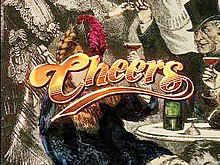
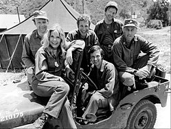

| Cheers |
1982-1993 |
NBC |
Boston |
 |
Ted Danson |
Sam Malone |
The show is set in the titular bar in Boston, where a group of locals meet to drink,
relax and socialize. At the center of the show is the bar's owner and head
bartender, Sam Malone, who is a womanizing former relief pitcher for the
Boston Red Sox. The show's ensemble cast introduced in the pilot episode
are waitresses Diane Chambers and Carla Tortelli, second bartender Coach
Ernie Pantusso, and regular customers Norm Peterson and Cliff Clavin. Later
main characters of the show include Frasier Crane, Woody Boyd, Lilith Sternin,
and Rebecca Howe. |
| M*A*S*H |
1972-1983 |
CBS |
Korean War |
 |
Alan Alda |
Dr. Benjamin "Hawkeye" Pierce |
The show was an ensemble piece revolving around key personnel in
a United States Army Mobile Army Surgical Hospital (MASH) in
the Korean War (1950–53). The "4077th MASH" was one of several
surgical units in Korea. Early seasons aired on network prime time while the Vietnam War
was still ongoing; the show was forced to walk the fine line of
commenting on that war while at the same time not seeming to protest
against it. The show's discourse, under the cover of comedy,
often questioned, mocked, and grappled with America's role in the Cold War. |